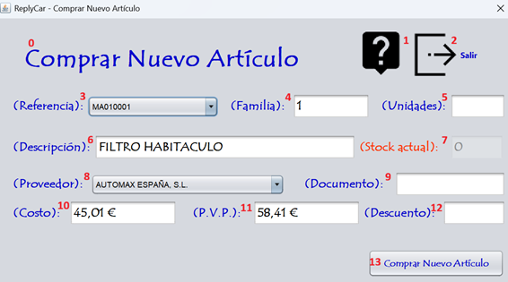

La compra de nuevos artículos a proveedores es el inicio de la actividad comercial para crear un stock inicial y poder realizar la venta final al cliente. Sigue las instrucciones de la fotografía para realizar el proceso correctamente. Para realizar la compra de un nuevo artículo debe ingresar los datos que corresponden a la numeración expuesta en la fotografía. Vamos a proceder:

0 - Título de la pantalla, descripción de lo que significa la pantalla.
1 - Botón para proceder a leer la ayuda de la aplicación.
2 - Botón para salir de la aplicación.
3 - Elige la referencia del artículo a comprar al proveedor.
4 - Familia a la que pertenece el artículo.
5 - Unidades a comprar del artículo seleccionado.
6 - Descripción del artículo seleccionado.
7 - Stock actual del artículo seleccionado.
8 - Proveedor al que se le realiza la compra de los artículos.
9 - Nº de factura del proveedor donde realizamos la compra de los artículos.
10 - Costo del artículo seleccionado para comprar.
11 - P.V.P. del artículo seleccionado para comprar.
12 - Descuento del artículo seleccionado para comprar.
13 - Realizar la compra del nuevo artículo.
Nota: Pulsando F1 en la ventana principal, se abrirá esta página de ayuda.